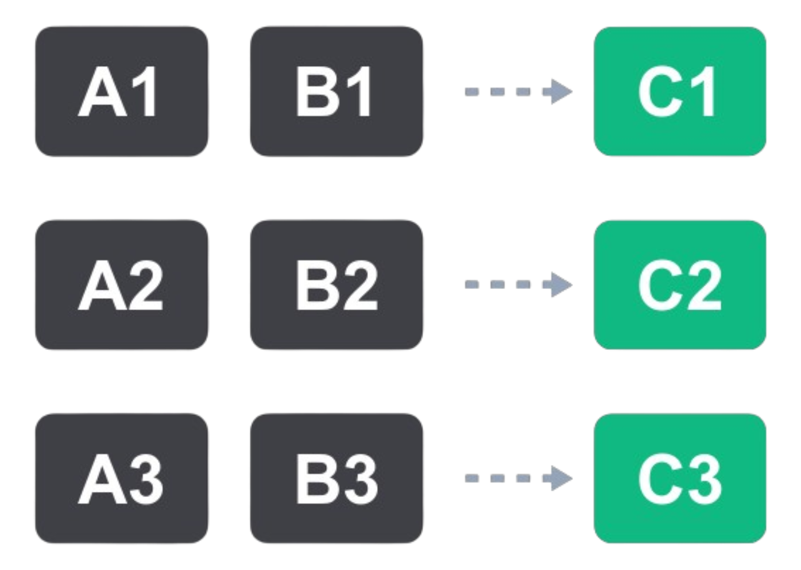
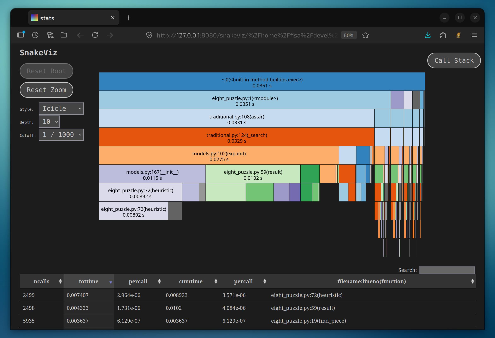
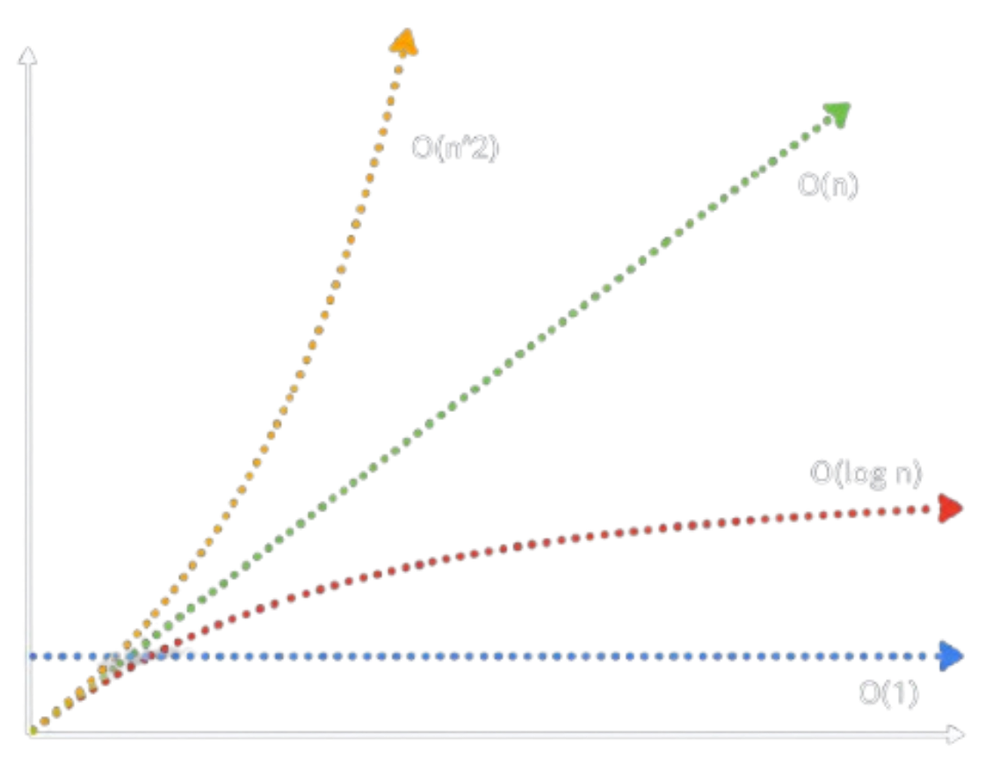

Tópicos Avanzados de Programación
Performance
Qué es "performance"?
Consumo de recursos (incluyendo tiempo) vs trabajo realizado por nuestros programas.
- Nos vamos a enfocar en tiempos 🕐
- De respuesta, de ejecución, etc.
A quién le afecta?
- Usuarios. Ej: "esta app es re lenta" 🤬.
- Nosotros (devs):
- Si es mala para los usuarios, se nos van.
- Quizás es buena para los usuarios, pero mala en costos de infra!
Nuestra app es lenta. Qué hacemos?
Charlemos sobre algunas respuestas comunes.
Pasemos a otro lenguaje/framework más rápido!
Cuál? Assembler? Costo de correr vs costo de desarrollo.
...y estamos seguros de que realmente va a ser más rápido? Por qué?
Ponemos más máquinas!
Puede ser, pero de vuelta: costos, quizás hay algo mejor que fuerza bruta?
...y estamos seguros de que realmente va a ser más rápido? Por qué?
Paralelizar en la misma máquina?
Punto clave en esto: paralelizar acelera? Cuándo sí y cuándo no?
Vamos a charlar mucho más de esto la clase que viene.
No hay soluciones simples
Tenemos que entender algunas cosas antes.
CPU vs IO
Tema clave a la hora de entender cómo resolver un problema de performance.
El código de la app (incluyendo sus deps) no es todo lo que define el tiempo que nos toma ejecutar cosas. Por ejemplo...
Cuánto demora la db en responder con la data? o en guardarla?
Cuánto demora la red en hacer la request al otro microservicio o servicio externo?
Cuánto demora el disco en leer el template?
Repasemos cómo suceden esas cosas a bajo nivel
Ejemplo: hagamos una consulta a una base de datos que no corre en la misma pc.
- CPU ejecuta código que construye la consulta SQL
- CPU ejecuta código que envía por red la consulta al servidor de base de datos.
- Espera.
- Llegan datos por la red.
- CPU retoma ejecución de código y procesa los datos que obtuvimos.
Tuvimos tiempo de ejecución de código (CPU), pero también tiempo de esperas de IO.
Cuál de los tiempos fue mayor en este ejemplo?

Espera de IO, por mucho! Ej: normalmente es un 90% del tiempo de una request web típica.
Cuánto de CPU y cuánto de IO?
- En una app web común?
- En una app móvil de una red social?
- En un juego?
- En una red neuronal?
En gran parte de las apps "normales", IO domina por lejos.
...y eso cambia por completo la efectividad de las soluciones que charlamos!
Probemos con un ejemplo: app web "normal".
Cuánto ganamos si pasamos a un lenguaje/framework 10x más rápido?
Muy poquito! Nuestros tiempos siguen dominados por esperas de IO.
...y migrar era costoso. Mucho costo, para muy poca ganancia.
Cuánto ganamos si ponemos muchas pcs?
Podemos resolver problemas como "el server no alcanza para el tráfico que tenemos".
...pero no problemas como "el usuario tiene que esperar demasiado por cada click" o "gastamos mucho en infra porque cada request toma mucho tiempo".
Ganamos algo si paralelizamos en la misma máquina?
Este es complejo... lo dejamos para unidad 2.
Spoiler: hay formas en las que sí, y formas que no.
Hay más cosas que podemos hacer para mejorar performance de manera efectiva cuando IO domina?
Sí! Reducir esas esperas, o hacer otras cosas mientras esperamos (unidad 2!).
Por ejemplo, para reducir las esperas en nuestro caso:
- Cachear resultados de la db para no ejecutar N veces la misma consulta.
- Configurar mejor nuestra db o cómo guardamos los datos (índices, sharding, etc).
- Escribir consultas más óptimas, y reducir la lectura de datos innecesarios
- y más...
En general, achicar tiempos de IO o hacer otras cosas mientras, incrementa muchiiiiiisimo más la performance que un lenguaje o framework más rápido.

Salvo cuando IO no domina!:
juegos, cómputo heavy, cómputo más simple pero en hardware limitado como un Arduino, etc.
Hablando de juegos... por qué una GPU acelera? Por qué sirve para performance?
GPUs y performance
Qué es una GPU? Qué tiene de especial? En qué difiere de un procesador normal?
GPU vs CPU
- CPU: pocos núcleos muy potentes, poco paralelismo pero operaciones complicadas.
- GPU: muchos núcleos menos potentes, mucho paralelismo pero operaciones sencillas.
...ok... pero para qué?

Cálculo vectorizado
Hay problemas donde naturalmente lo que hacemos es una cantidad muy grande de operaciones sencillas, idénticas e independientes (paralelizables!)
Ojo: no cualquier cosa en paralelo. Operaciones simples, idénticas (solo varían los inputs) e independientes!
✅ Sumar dos vectores gigantes de números.
❌ Hacer muchas requests a una api.
❌ Una secuencia donde cada operación depende de la anterior.
Aplicaciones comunes:
- Gráficos! Operaciones en masa sobre imágenes (por sectores de la imagen en paralelo).
- Física! cálculos idénticos en masa para distintos objetos o partes de una escena.
- Redes neuronales / IA! por dentro funcionan haciendo operaciones entre matrices gigantes, re paralelizables.
- Y más...
Por eso una GPU acelera: nos permite correr miles de operaciones en paralelo, que en CPU no podríamos haber paralelizado tanto.
Y por eso no acelera cualquier problema: solo problemas con miles de operaciones paralelizables.
Ej: responder una request web NO es un problema de ese tipo.
GPU: algunas aclaraciones
- Tiempo de GPU entonces técnicamente no es IO, es código corriendo. Peeeero...
- CPU pide cosas y GPU responde, CPU tiene que esperar a la GPU. Así igualmente hay un tipo de espera desde el punto de vista de CPU.
- A veces uno puede ser cuello de botella del otro. Ej: juego usando CPU y GPU, uno puede estar esperando al otro.
- Lo que más afecta al tiempo de GPU es qué tanto podemos paralelizar el cálculo y qué tan potente es la GPU.
- Los lenguajes, libs, etc que se usan en GPU son muy diferentes.
Volvamos al código en CPU
Qué pasa cuando su tiempo de ejecución es lo que nos está afectando?
- Mi app está demorando en calcular X cosa.
- La lógica de mi juego es re pesada.
- Mi hardware es re limitado (ej: código complejo en arduino).
- No lo puedo paralelizar como para que una GPU rinda, o no hay GPU donde corre.
- Ya mejoré todo lo que pude por el lado de IO! No me queda otra que achicar el tiempo de CPU.
Para esos casos, nos interesa aprender sobre:
- Profiling.
- Complejidad computacional.
- Lenguajes de programación y su performance.

Profiling
El acto de medir el consumo de recursos (memoria, tiempo) de un programa durante su ejecución.
Nunca optimizar el código antes de estar seguros de dónde es lento!
Con profiling buscamos dónde se va el tiempo.
Todos los lenguajes tienen herramientas de profiling, algunas más fáciles de usar que otras.
Pero en general, los pasos son los mismos:
# 1. correr nuestro código con un profiler
# (desde "afuera", o modificando nuestro código)
python3 -m cProfile -o stats.dump my_program.py
# 2. analizar la info generada por el profiler
# (tablas, gráficos, lo que nos genere)
uvx snakeviz stats.dump
{kind=link}

Cosas típicas que podemos encontrar:
- Funciones que toman un gran % del tiempo total.
- Funciones que se llaman demasiadas veces.
- Funciones que en promedio demoran demasiado para lo que hacen.
Recuerden: medir antes de optimizar!
Complejidad computacional
Comparemos la performance de algoritmos entendiendo cómo escalan.
"cuándo le salió esa mancha en la nariz al perro??"
- Mirar de a una foto: tiempo crece linealmente.
- Comparar todas contra todas: tiempo crece cuadráticamente.
- Búsqueda binaria: tiempo crece menos que linealmente (logaritmo de n).

La complejidad computacional del algoritmo nos dice cuánto crece en tiempo si crece el tamaño de la entrada.
- Podemos comparar algoritmos sin depender del lenguaje, CPU, etc.
- Y predecir la performance de nuestro algoritmo cuando crezca la data.
- Y mejorar muchísimo la performance solo cambiando la lógica.
Notación "Big O"
No nos vamos a meter mucho en el detalle (es más estricto que esto), pero a grandes rasgos:
- Función "O", de "n" (cantidad de entradas) que nos dice cantidad de operaciones a correr.
- En el peor caso.
- Solo nos interesa el término dominante ("el peor").
- Y no nos interesan constantes que sumen o multipliquen a toda la función.
Ej1: un O(n + 15) es simplemente O(n)
Ej2: un O(10 * n^3) es simplemente O(n^3)
Ej3: un O(n^3 + n^2 + 10*n) es simplemente O(n^3)

Lenguajes y performance
Qué lenguaje uso? Qué hace que un lenguaje sea rápido o lento?
Qué lenguajes conocen como rápidos y como lentos?
Y por qué son rápidos o lentos?
Mito 1:
Lenguajes compilados vs interpretados
"En Java/C# el código fuente se compila a binario. Luego ejecutamos el binario."
"En Python el código fuente es interpretado instrucción por instrucción a medida que se ejecuta."
"Python es lento porque es interpretado."
❌
Ni una de las oraciones de la slide anterior es cierta.
❌ "En Java/C# el código fuente se compila a binario. Luego ejecutamos el binario."
✅ Java/C# compilan a un lenguaje intermedio. Runtime interpreta el lenguaje intermedio.
(hay otros lenguajes donde sí se compila a binario. Ej: Rust, Go, C)
❌ "En Python el código fuente es interpretado instrucción por instrucción a medida que se ejecuta."
✅ Python compila a un lenguaje intermedio. Runtime interpreta el lenguaje intermedio.
(hay otros lenguajes donde sí se interpreta el fuente. Ej: PHP)
Los lenguajes realmente compilados (C, Rust, Go) son más rápidos que los realmente interpretados por obvias razones, pero...
✅ Java/C# compilan a un lenguaje intermedio. Runtime interpreta el lenguaje intermedio.
✅ Python compila a un lenguaje intermedio. Runtime interpreta el lenguaje intermedio.
🤔 No es lo mismo? Y entonces por qué Python es más lento que Java o C#??
Hay una diferencia: cuándo compilamos.
- Python: al ejecutar el programa.
- Java/C#: a mano antes de distribuir el programa.
Pero esto no hace lento a Python! Es casi instantáneo y solo al inicio.
La lentitud no tiene que ver con cuándo compilamos.
Mito 2:
Lenguajes de tipado estático vs dinámico
"En los lenguajes de tipado estático, todas las cosas tienen el tipo de dato definido en código."
"En los dinámicos, los tipos se saben recién en ejecución."
"Eso hace que los lenguajes dinámicos sean más lentos."
❌
No tan mal como el mito 1... Pero tampoco bien.
Es una simplificación engañosa.
✅ Todos los lenguajes tienen info de tipos estática y dinámica:
- Estática: la que podemos saber mirando el código.
- Dinámica: la que requiere ejecutar el programa para saberse.
Python tiene info estática de tipos?
Sí, bastante!
Y no me refiero a las type annotations siquiera!
La info estática puede ser INFERIDA.
Ej:
cosas = [1, False, "hola", []]
cosas[2].uppper() # <-- sabemos qué tipo es `cosas[2]`?
precio = 19.99
cantidad = 4
total = precio * cantidad # <-- de qué tipo es `total`?
if random() > 0.5:
x = "hola"
else:
x = []
# y acá? sabemos de qué tipo es `x`?
La info puede usarse para hacer chequeos de tipos:
- Estáticos: "no te compilo, estás queriendo hacer una operación inválida entre un string y un número".
- Dinámicos: "te tiro un error, estás queriendo correr una operación inválida entre un string y un número".
Tipado fuerte vs débil
Los lenguajes que hacen más chequeos y te impiden hacer cosas inválidas, tienen tipado Fuerte.
Los lenguajes que te dejan hacer cosas inválidas e igual intentan devolver algo, tienen tipado Débil.
Qué es Python por ejemplo?
❌ Tipado débil?
✅ Tipado fuerte!
Bonus mito:
Tipado dinámico no significa tipado débil!!!
En Python el chequeo es dinámico, pero fuerte.
En Javascript y PHP el tipeo es débil.
Tipado fuerte peeeeero...
Python es de tipado fuerte, pero no hace chequeos estáticos. Todos sus chequeos son dinámicos!
Y su lentitud tiene mucho más que ver con eso. Con dinámicamente resolver tipos (es complejo).

Cuando un programa corre persona.saludar()...
- Java: el compilador ya se aseguró que el método existe y guardó info sobre dónde está definido.
- Python: en tiempo real tiene que ver si está definido, dónde, etc. Esto es lo costoso.
Lenguajes vs performance
Repasemos un poco:
- Los lenguajes realmente compilados son más rápidos que los realmente interpretados.
- C# y Java no son realmente compilados, y Python no es realmente interpretado.
- La performance en ellos no difiere por el modo de compilación, sino por cuándo se chequean tipos.
- Que los chequeos sean dinámicos no significa que el tipado sea débil. Sí tiene un impacto en performance.
Importa entonces el lenguaje para performance?
Depende! Recuerden:
Y en código que hace tareas complejas, complejidad computacional pesa mucho más que el lenguaje!
1000x por usar un mejor algoritmo le gana a 10x por usar un lenguaje más rápido.
Consejo final: 80/20
Muchas veces una pequeña parte del código es la que realmente necesita ser rápida.
...y es muy fácil escribir esa parte en algo más rápido y el resto en algo más mantenible :)